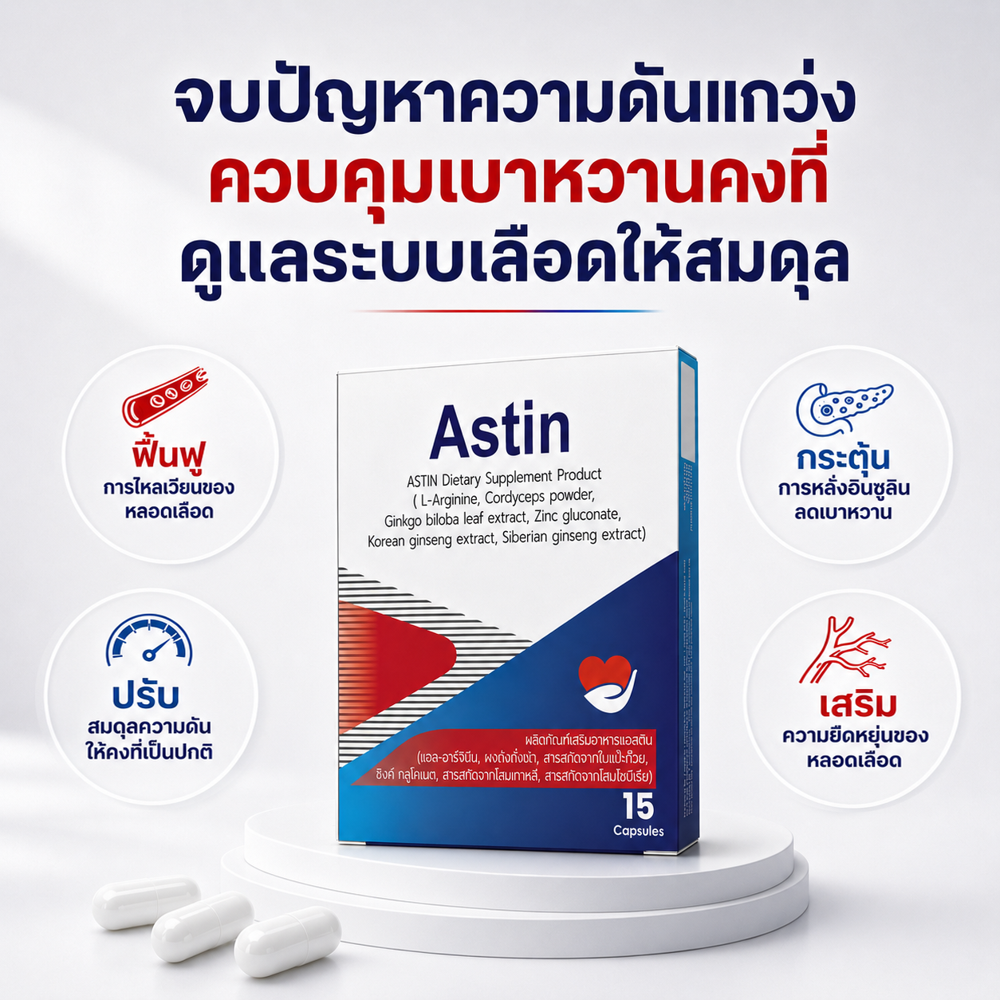
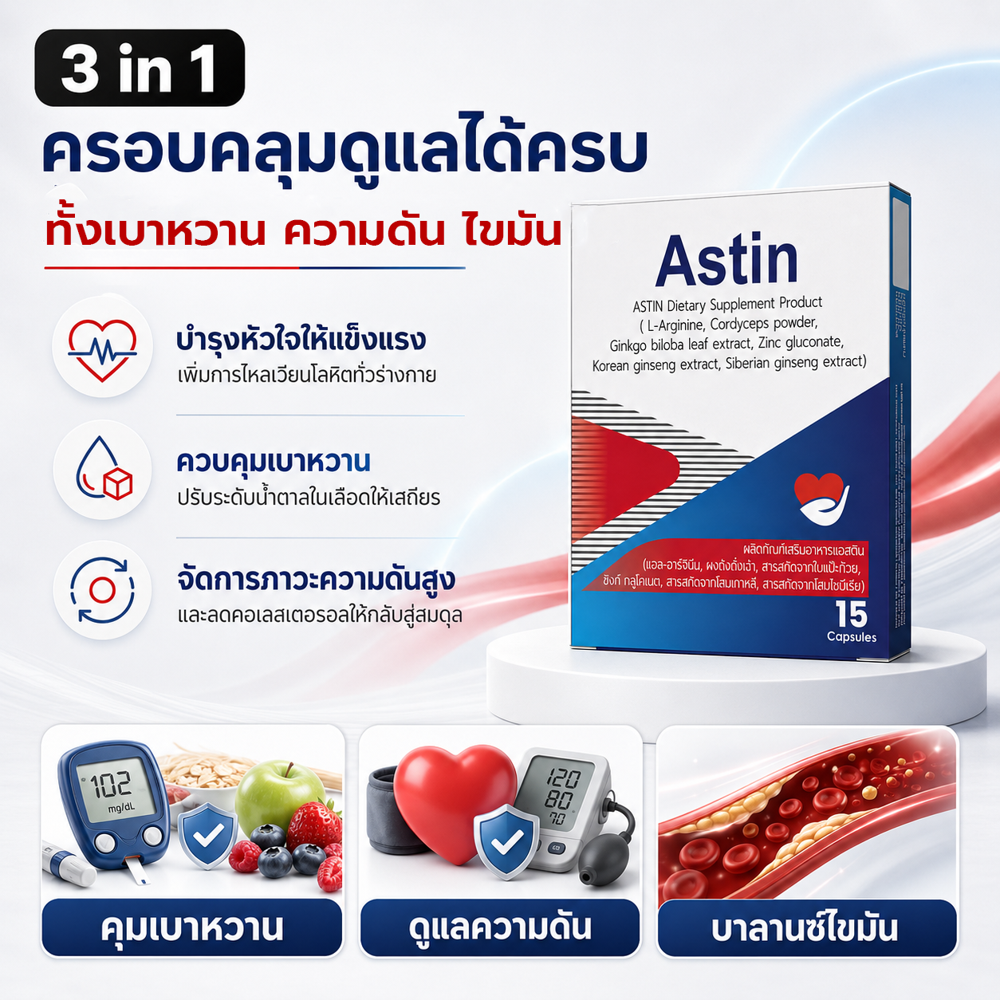
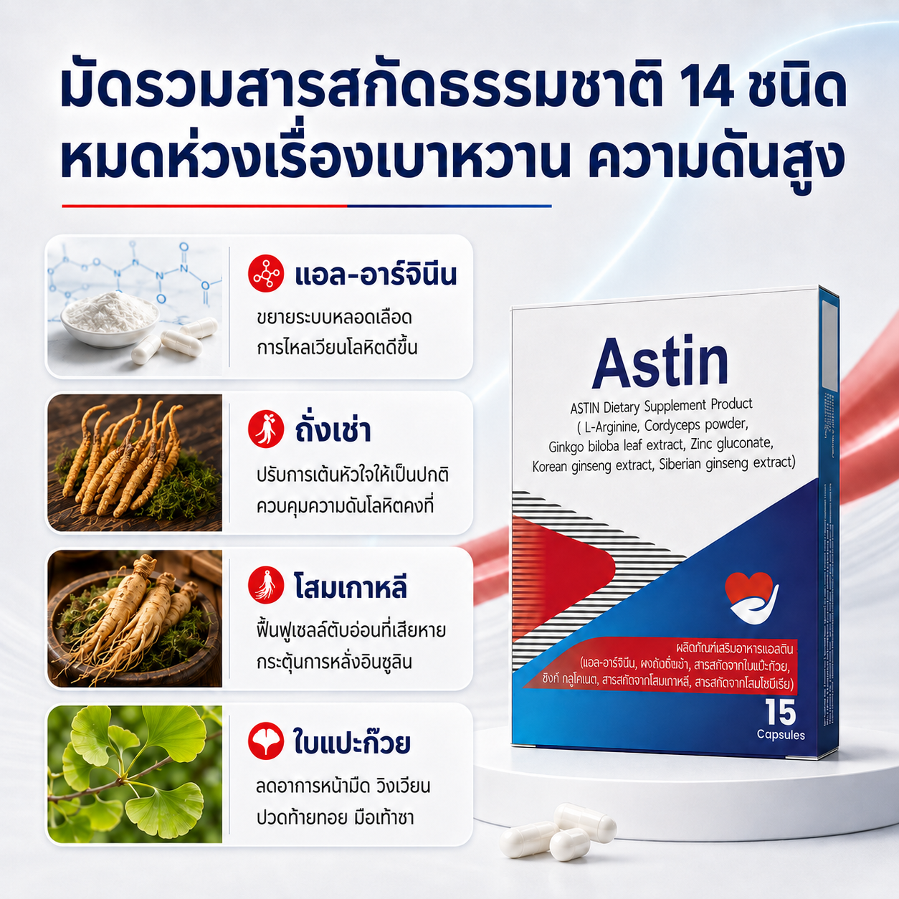
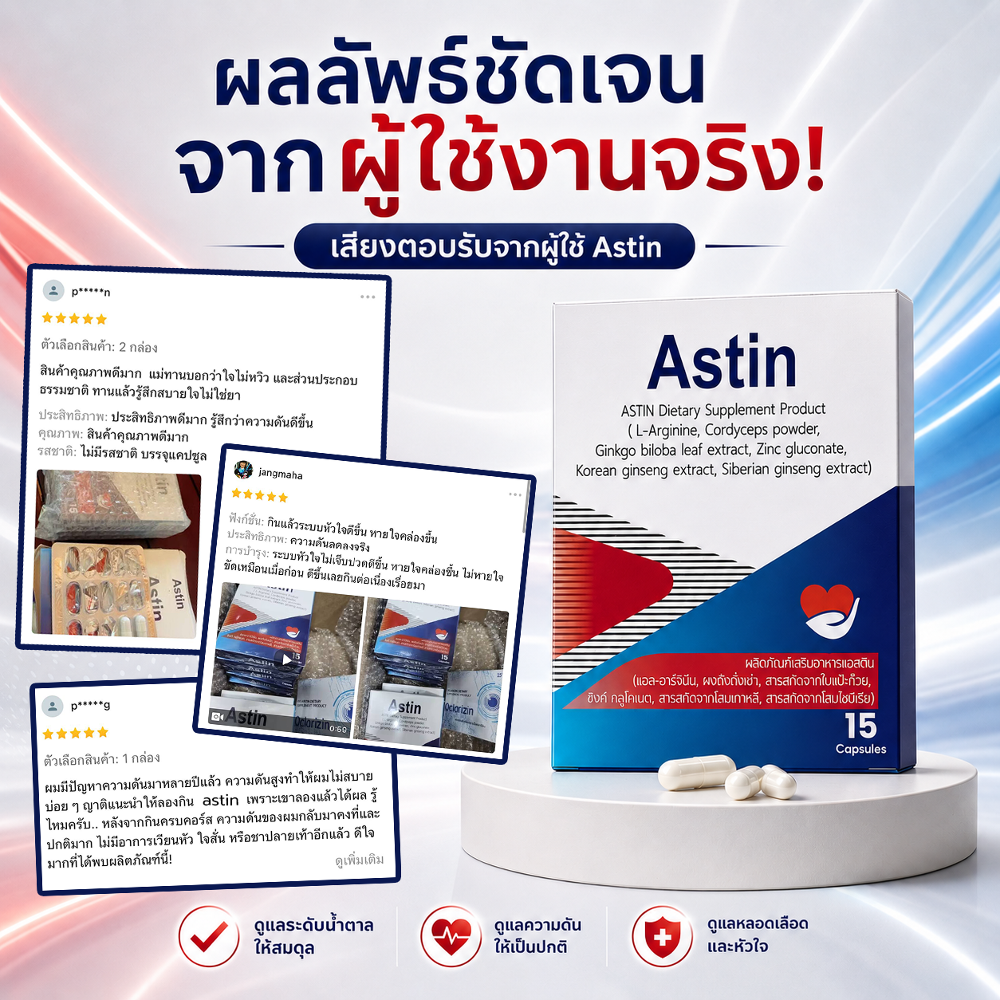
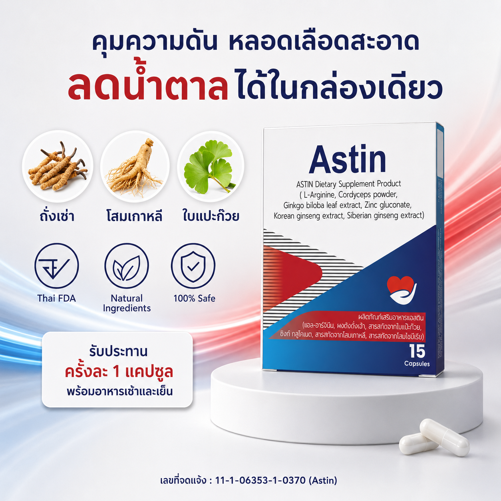

Astin
✓
ฟื้นฟูระบบไหลเวียนเลือด
✓
ช่วยควบคุมความดันโลหิต
✓
ช่วยลดระดับน้ำตาลในเลือด
Astin ส่งเสริมการทำงานของตับอ่อนในการหลั่งอินซูลิน เพื่อเป็นส่วนหนึ่งในการช่วยดูแลและควบคุมระดับน้ำตาลในเลือด พร้อมทั้งช่วยดูแลระบบไหลเวียนโลหิต เสริมความแข็งแรงให้ผนังหลอดเลือด และลดการสะสมของไขมันชนิดไม่ดี (LDL) ที่เกาะอยู่ตามผนังหลอดเลือด ส่งผลให้ระบบความดันโลหิตทำงานได้อย่างมีประสิทธิภาพ และลดความเสี่ยงต่อปัญหาสุขภาพหัวใจในระยะยาว
🛡️ ผ่านการรับรองจาก อย.
เลขที่: 11-1-06353-1-0370
ร่างกายกำลังส่งสัญญาณเตือน... จากภัยเงียบในระบบเลือดอยู่หรือเปล่า?
❌ 1. สัญญาณเตือนที่คุณกำลังเจอ
- ระดับน้ำตาลและค่าความดันไม่ปกติ
- หน้ามืดตอนเปลี่ยนท่า ทรงตัวไม่อยู่
- ตาพร่ามัว ชาปลายมือ ปลายเท้า
- รู้สึกตึงๆ หนักๆ ที่ท้ายทอยหรือขมับ
- ใจสั่น เหนื่อยง่าย อ่อนเพลียเรื้อรัง
⚠️ 2. ผลกระทบหากปล่อยทิ้งไว้
- ภาวะหัวใจล้มเหลวเฉียบพลัน
- ไตเสื่อม / ไตวายจากเบาหวานและความดัน
- ภาวะหลอดเลือดตีบ-ตัน-แตก
- เบาหวานขึ้นตา แผลเบาหวานเรื้อรัง
- ภาระค่ารักษาพยาบาลระยะยาว
ดูแลระบบเลือดและหัวใจอย่างตรงจุด ด้วยสูตรสารสกัดธรรมชาติ Astin
Astin ผลิตภัณฑ์อาหารเสริมที่คัดสรรสารสกัดเกรดพรีเมียมที่มีประสิทธิภาพสูง เพื่อตรงเข้าฟื้นฟูสุขภาพหลอดเลือดและจัดการปัญหาลึกถึงต้นเหตุ
บำรุงระบบไหลเวียนเลือดและหัวใจ: ช่วยลดความหนืดของเลือด กระตุ้นกลไกการไหลเวียนเลือด ทำให้ระบบหมุนเวียนโลหิตทำงานได้อย่างคล่องตัว ส่งออกซิเจนและสารอาหารไปเลี้ยงหัวใจและกระจายสู่ทั่วร่างกายได้อย่างเต็มประสิทธิภาพ
ปรับสมดุลระดับน้ำตาล: ส่งเสริมการทำงานของตับอ่อนในการผลิตและหลั่งอินซูลินอย่างเป็นระบบ ลดการสะสมของน้ำตาลส่วนเกินในระยะยาว
ควบคุมความดันให้คงที่: เพิ่มความแข็งแรงและคืนความยืดหยุ่นให้แก่โครงสร้างหลอดเลือด ทำให้ค่าความดันและคอเลสเตอรอลในเลือดกลับสู่สมดุล
ผลลัพธ์ที่คุณสัมผัสได้ เมื่อทาน Astin อย่างต่อเนื่อง
- ตัวเลขบ่งชี้ทางสุขภาพคงที่: คอเลสเตอรอลสะสม ระดับน้ำตาลในเลือด และความดันโลหิตอยู่ในเกณฑ์ที่น่าพึงพอใจ ไม่เหวี่ยงขึ้นลงจนน่ากังวล
- สุขภาพหัวใจแข็งแรงในระยะยาว: ระบบหมุนเวียนโลหิตคล่องตัว หลอดเลือดมีความยืดหยุ่นมากขึ้น ลดภาระการทำงานหนักของหัวใจอย่างยั่งยืน
- หมดปัญหาหน้ามืด ตึงท้ายทอย: ลดอาการปวดตึงบริเวณท้ายทอย ลดอาการหน้ามืดขณะเปลี่ยนท่าลุกนั่งเร็วๆ
- ลดอาการชาปลายมือปลายเท้า: ระบบไหลเวียนเลือดและปลายประสาทได้รับการฟื้นฟู ช่วยให้อาการชาตามปลายประสาทค่อยๆ ดีขึ้น
- ร่างกายสดชื่น ไม่เหนื่อยง่าย: บอกลาปัญหาความอ่อนเพลียเรื้อรัง ตื่นนอนด้วยความกะปรี้กะเปร่า มีพลังใช้ชีวิตได้ตลอดวัน
เจาะลึก 6 สารสกัดหลักใน Astin ฟื้นฟูระบบเลือดจากภายใน

แอล-อาร์จีนีน
- ส่งเสริมการทำงานของหัวใจ
- กระตุ้นการไหลเวียนโลหิต
- ดูแลระบบหลอดเลือดโดยรวม
โสมเกาหลี
- เพิ่มประสิทธิภาพการคุมน้ำตาล
- เสริมความต้านทานเบาหวาน
- ปรับสมดุลระบบเผาผลาญอาหาร
ถั่งเช่า
- หลอดเลือดขยายตัวดีขึ้น
- ปรับสมดุลความดันโลหิต
- ลดการสะสมของคอเลสเตอรอล
โกจิเบอร์รี่
- ลดไขมันชนิดไม่ดี (LDL)
- เพิ่มไขมันชนิดดี (HDL) ในเลือด
- ต้านอนุมูลอิสระ ปกป้องหลอดเลือด
โสมไซบีเรีย
- ปรับสมดุลความดันโลหิต
- เพิ่มการเผาผลาญน้ำตาลในเลือด
- ฟื้นฟูร่างกายจากความอ่อนเพลีย
ใบแปะก๊วย
- นำเลือดไปเลี้ยงส่วนต่างๆ ได้ดีขึ้น
- บรรเทาอาการวิงเวียนศีรษะ
- ลดอาการมือเท้าชา ปลายประสาทอักเสบ
ยืนยันประสิทธิภาพจากผู้ใช้จริง
นพดล ธรรมสุวัตน์
ซื้อให้คุณพ่อทานครับ แกบ่นเหนื่อยง่าย เดินนิดเดียวก็หอบ แถมความดันสวิงบ่อย
ตอนนี้ทานต่อเนื่องมาเดือนกว่า พ่อบอกหายใจอิ่มขึ้น ไม่เหนื่อยง่ายเหมือนแต่ก่อนแล้ว